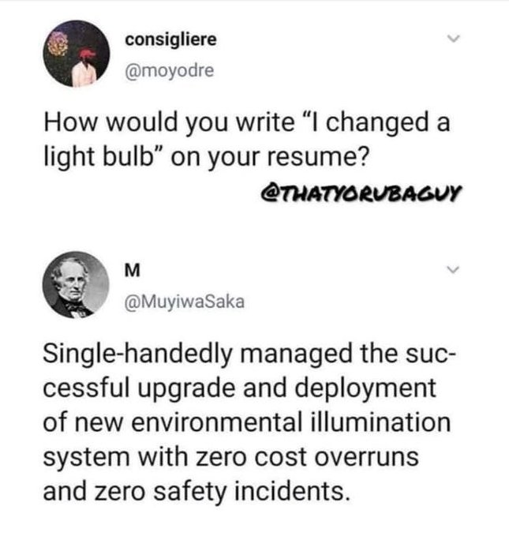

Sapir-Whorf Theory
How Language Influences Thought
1. The Sapir-Whorf Theory
The Theory of Linguistic Relativity is a principle suggesting that the structure of a language influences its speakers’ worldview or cognition, and thus people’s perceptions are relative to their spoken language. Linguistic Relativity is traditionally known as the Sapir-Whorf Hypothesis, but I prefer to call it the Sapir-Whorf Theory instead since there is definitive evidence that language does influence thought.
To be clear, I’m not saying that language is thought, and I’m not saying that thought is language. Language and thought are different mental and physical processes, and they are parallel to each other. No one disputes that we need thoughts to generate language, or that thought originated before language did in the evolutionary history of humans and animals. The thesis of this essay is that language is instrumental to thought, and vice versa. Changing one can affect the other.
The Sapir-Whorf Hypothesis is often brought up when discussing how the usage and ability of different human languages may influence human thought, but it’s not necessary to speak another language in order to understand linguistic relativity. It’s sufficient to use only one language to observe linguistic relativity. In practice, most linguistic relativity tends to originate from semantic differences, whether inside of a language itself or between languages that use different words for different concepts. There is some evidence that different grammatical structures can influence thought to an extent, but it needs to be emphasized that they are not the primary cause of linguistic relativity.
When most people think of the Sapir-Whorf Hypothesis, they tend to think about how grammar structures and different languages influence thought, rather than how semantics (and hence language) affect thought. If we’re strictly talking about different grammar structures, then we could say that the Sapir-Whorf Hypothesis is “mostly false” since grammar is not the main cause of linguistic relativity. If we’re strictly talking about whether different languages influence the ability to think, then we know that differing semantics are the main cause of most linguistic relativity, and different languages have different semantics. So, we know that different languages will cause people to have different ways of thinking about things. I propose that there are two main reasons why people who oppose the Sapir-Whorf Hypothesis would deny that a person’s language affects how a person thinks and what they think about:
- It’s harder to observe semantic contrasts between words from different languages, rather than observing semantic contrasts between words and phrases from the same language.
- Languages don’t affect what people are capable of thinking of. When I say this, I mean that no language makes it impossible to think about certain things. All human languages have the ability to be creative, extensible, dynamic, and adaptable for describing human thought. However, different languages may make some things easier or harder to think about. In most cases, all the differences will balance out against each other in aggregate, compared to any other language. Anything that can be said in one language can be translated to another language to describe the same semantics, if enough words and quality descriptions are used.
- Due to survivorship bias, some of the most egregious examples of language corrupting or constraining thought have already been resolved (e.g. Roman numerals were replaced by Arabic numerals for more efficient thought), so language appears in equilibrium. Conversely, any instance that hasn’t already been resolved is probably being artificially prevented from resolution by politics and hence is intensely controversial.
I’ve heard that many studies have failed to replicate experiments and conclusions made on the Sapir-Whorf Hypothesis. I would wager that these studies mostly likely failed to replicate due to bad methodology and a failure to realize the facts and concepts mentioned above and below this line.
In the following subsections, we will describe the various ways how language may affect thought within a single language. In practice, they also apply for describing how language may affect thought between different languages. Once we understand how language affects thought within a single language, we can understand how it could affect thought between two different languages by analogy.
1.1. Gavagai And The Arbitrariness Of Words

The original rendition of Gavagai by Willard Van Orman Quine gets rather unnecessarily abstract. To keep it simple, we’ll only focus on the basics. Suppose someone who doesn’t share any language with you points at a rabbit and shouts “Gavagai!” The top pane of the comic suggests several possibilities “gavagai” might mean:
- “rabbit” (obvious)
- “look!” (a verb, e.g. look at where I’m pointing)
- “prey/food/meal/animal” (term more generic than rabbit)
- “white” (an adjective, e.g. it’s a white rabbit)
- The specific name of that particular rabbit, like a pet’s name.
In Quine’s thought experiment, “gavagai” has multiple interpretations because the person who doesn’t speak the language doesn’t have any context for figuring out the specific meaning. The takeaway here is that there is no objective basis for how meaning gets attached to soundstrings. There are no objective reasons why a rock is called a “rock”. The same goes for almost every word you can think of.1
Language is intersubjective. Dictionaries are supposed to document meanings according to how words are used. Dictionaries don’t create meaning, but in practice, dictionaries often tend to be used prescriptively instead of descriptively, since they’re seen as an authoritative source when people disagree over what words should mean.
A word’s literal dictionary definition might be X, while it is Y in the minds of others. The most common meaning and usage of words is determined by how people use said words. So regardless of how dictionaries may define words, a word’s de facto definitions are always how the word is most commonly used and in what contexts. Since dictionaries aim to document how people are using words, dictionaries are always out-of-date as soon as they are published. Dictionaries can only be updated so fast, so we have to wait for dictionary entries to be updated if a word’s meaning changes quickly.
Ideally, people should use words according to their most common meaning and usage if they want to be understood most easily. However, people can and should explicitly redefine words if there’s a better meaning that clarifies confusion, especially on important issues.2 A significant amount of human discourse revolves around clearing up misunderstandings of what people are saying or intend to say, especially when it comes to anything complicated or outside normal discourse. Most people usually just translate whatever smarter people say into something else that fits into their brains better.
Some definitions can be better and more practical than others, and for different contexts. A “false” definition is said to be either: 1. a definition (deliberately) designed to carry a connotation it doesn’t deserve, or 2. a definition that defines something doesn’t exist in reality, but can help describe what/how reality is (in comparison to what it is not).
Fallacies of Definition are the various ways in which definitions can fail to explain terms. Definitions may fail to have merit if they are:
- Circular
- Overly Broad
- Overly Narrow
- Ambiguous
- Defined With Obscure Language
- Incomprehensible
- Persuasive Definitions
Relevant Reading: Wikipedia: Private Language Argument.
1.2. Classical Conditioning
See: Wikipedia: Classical Conditioning
Repeatedly associating words and concepts together affects how we think about them. If we observe a word being used with specific connotations enough times, we will start to associate the word with the connotations, potentially up to the point that the connotations are mentally built internally into the word’s semantics. All modern journalists are aware of how classical conditioning has the power to influence people’s minds, and they use it all the time to manipulate the masses.
For example, most people think that the sky is blue, when it actually isn’t always blue. People only believe this because the phrase that “the sky is blue” has been repeated so many times that it’s instilled into people’s minds as an obvious fact of life, and they never bothered to question the extent of its truth. Examples like this and others demonstrate how a lie that is told enough times will appear to be true.
As another example, swastikas have historically appeared across many different cultures throughout history. But in the modern world, swastikas are now usually associated exclusively with Nazism due to the Nazis’ rise to power and the symbol’s repeated association with Nazis.
{kind=link}
For examples of how classical conditioning affects word semantics specifically, see the various examples covered in section 2 of this webpage.
1.3. Selective Attention
Consciousness can be thought of as will and awareness. If one expands, the other detracts. Attention is the concentration of awareness on some phenomenon to the exclusion of other stimuli. Selective Attention is an individual’s limited capacity to choose what they pay attention to and what they ignore.
As aforementioned, classical conditioning influences the connotations associated with words, which affects what people think words mean. The repeated associations and classical conditioning of semantics can only occur when the associations evade people’s Selective Attention. If we fail to pay enough attention to how words and concepts are defined, our preconceptions of the ideas will influence how we think about them. As we shall see in the videos below, humans have limited attention spans, so it’s always possible for someone to sneak details into our thoughts without us noticing, perhaps as a truth sandwich.
- Leading Questions - Yes Prime Minister
- Selective Attention Test 1: Cups Game
- Selective Attention Test 2: Passing The Basketball
- Selective Attention Test 3: The Door Study
When words are construed to evade people’s selective attention, this tends to result in false equivocation fallacies, contradictory beliefs, and double standards. Selective Attention thus plays a major role in forming our belief networks.
Since every person has their selective attention focused on different subjects, different people will notice or fail to notice when the mental definitions and language corpuses stored in their minds are influencing their thoughts. The key to expanding our selective attention is to add variety to our thought processes, avoid echo chambers and ideological circles, and explore other people’s perspectives and worldviews. As subjects, we have limited knowledge about the world. Every person’s perspective is different and has different assumptions. Exploring other perspectives allows us to bring our unexamined assumptions and definitions into our consciousness and critique them, which is the main goal of philosophy.
Everyone has assumptions because they are necessary in order to think. It speeds up mental calculations when the brain doesn’t have to consciously realize assumptions and axioms all the time. However, taking assumptions (and definitions) for granted can have negative consequences regarding the conclusions that we make with our reasoning, if we’re not careful. In a sense, every word’s definition includes a set of unconscious assumptions that the mind uses to think when it reasons and uses words to form concepts. Language influences thought when we are not paying attention to the semantic assumptions at hand.
If someone is extremely well-versed in a subject to which they are opposed, then no amount of calling this rose by another name will fool them into changing their opinions. For instance, an expert on Communism who is opposed to Communism could never be persuaded by somebody making a thesaurus argument to convince them that Communism is good. A Communist might try what they can to relabel it “collectivism” or “meritocratic distribution” or something else with a stealthily hidden meaning, but the expert is always going to recognize the underlying idea regardless of what it’s being called. On the other hand, we can imagine someone who is ignorant to the details of Communism, but still superficially opposed to the idea. Say, your typical lower middle class Republican. He might balk if someone tries to discuss implementing Communism in his country, but he is much more likely to discuss the ideas of “collective obligations” or “meritocratic distribution”. The ignorant are susceptible to thesaurus arguments because their lack of understanding means that they oppose only the word, not the ideas that the word is supposed to represent.
Tracking And Modeling Where Our Attention Is Focused
Memes compete for real estate in our brains.
Theoretically, we can determine which memes and thought patterns are most dominant within our minds, as well as what we’re ignoring (what we talk don’t talk about) by using Corpus Linguistics to analyze the frequency of words and collocations in our speech.
Collocations have major effects on our cognitive processing by affecting how we associate words together because words get their meaning from other words.
Further Reading: Wikipedia: Zipf’s Law
Further Reading: Wikipedia: The Statistical Significance of Collocations
1.4. Thought Constraining Mantras
Some people tend to think with words, while others tend to think with ideas.
For speaking or writing, a person who thinks with words is just throwing around mantras or parroting quotes that seem to fit a discourse context. They don’t really understand what they are saying or writing, because they haven’t thought about what their words actually mean on a deeper level. Their words have no “meaning” to people outside of the meaning that they’ve subjectively imbue them with in their minds or their social group(s).
For listening or reading, a person who thinks with words is just doing quick pattern matching based on words that they know. For example, if they hear a word that means something bad in their mind, then they may simply stop thinking about what they’re listening to. Supposedly, the word refers to a bad idea that isn’t worth any further thought or critique. The listener doesn’t do any thought that’s based on the definition, meaning, or context. It’s just a quick pattern recognition. In discourse, they respond to the “bad” idea by applying a dismissive or pejorative label to it. Whether they are aware of it or not, this behavior functions as social signaling. Examples:
- Atheism/Igtheism, Determinism, Physicalism, Efilism/Antinatalism, etc may be labeled as “Nihilism” to dismiss any further thought about those ideas.
- Georgism may be labeled as “(Land) Communism” to dismiss further discussion about it.
- Race may may be labeled as a “social construct” to dismiss further discussion about how race is biological.
- Population control and abortion may be labeled as “eugenics” to shut down discussions that have uncomfortable yet important implications.
- “Malthus was wrong” is a thought-terminating mantra. It’s often repeated to dismiss concerns about overppopulation.
- Race, IQ, and biological realism may be labeled as “pseudo-science” to dismiss further discussion.
- Et Cetera
When a person hears a word or says a word that causes them to dismiss ideas without doing deeper thought, we shall call this a “thought-terminating mantra” or “thought-stopper”. Similarly, thought-constraining mantras are words or phrases that redirect a person’s selective attention or flow of thought. They cause people to avoid seeing the blindspots in their knowledge.
Thinking with ideas is about using language to explain/elucidate reality (preferably in rigorous depth). This usage aims to expand rational thought and has less of a social function, if any. People who care about semantics have a rough time with the euphemism treadmill. But to someone who thinks with words, thought-terminating mantras make perfect sense.
Related Video: The Progressive Lexicon.
1.5. Parroting Quotes To Create The Pretense Of Knowledge
There seems to be a tendency where people will frequently repeat quotes whenever it seems to even remotely pattern match with the current topic of discussion. This is a sign of “lower-level thinking” and apophenia, especially when the nonsense doesn’t actually mean anything or lead to anything insightful. A lot of popular ideological quotes also make use of emotional rhetoric, loaded language, and sensationalist phrases.
Some examples:
- Devout Christians repeat lots of quotes and passages from the Bible under the pretense that it’s actual knowledge,
- Chinese people had to recite quotes from the Little Red Books during the Cultural Revolution as if the quotes were real knowledge.
- North Koreans have to memorize and repeat quotes about their Supreme Leader for most of their education, due to the country’s cult of personality.
- Et Cetera. Political ideologues do this all the time on the Internet.
This is not to say that repeating quotes is always bad. There are times when recalling quotes is important and perhaps even necessary. But if it’s being done habitually when the quotes have only slivers of relevance to the topics and current context at hand and/or people think that repeating said quotes demonstrates to other people that they are knowledgeable, then it’s probably being over-used under the pretense that it’s “critical thinking”, and the behavior should be re-evaluated. Constantly repeating quotes is exactly what religions, cults, superstitious philosophies, internet memes, and malevolent political ideologues do. Many incorrect sayings get widely spread in human languages because they’re easy to remember, repeat, and get stuck in people’s heads.
Acting based on reason is superior to acting according to interpretations of quotes. Good science typically doesn’t repeat quotes very frequently.
1.6. Words That Influence Conceptual Attention And Information Retrieval
The fourth way how language can influence thought is when there are words for representing concepts that people may otherwise pay less attention to or not think about at all. Everybody has had moments where there was a great word for communicating their thought(s) on the tip of their tongue, but they just couldn’t remember it. Or perhaps their language didn’t have a word for communicating the phenomenon. The invention of new words for specific concepts leads to faster neurological retrieval of those concepts.
Restricting the words that a person is taught never restricts the entire possible set of ideas that a person could theoretically or hypothetically think about, given enough time. It’s rather the opposite: if a language lacks a word, one is invented and then propagated. Examples:
- The words “subject” and “object” enable philosophers to talk about the subject-object dichotomy and its implications. Many languages probably don’t have direct translations for those abstract words.
- Richard Dawkins coined the term “meme” so that he could better describe a new field of knowledge that is related to evolution and biology, and he gained a lot of fame since he was the first person to invent the neologism and use it to communicate a very important and interesting phenomenon for describing how the world works.
- The word “virtue-signaling” communicates why people like to show off their righteous moral beliefs.
- The word “validation-seeking” communicates how people often know the (obvious) answers to their questions, but they still have the need to ask other people (and often the Internet) anyway in order to reassure them and validate what they want to do.
- The word “virgin” doesn’t have equivalents in some languages, and its existence as a word in the English language may make English speakers more conscious about whether or not they’ve ever had sex.
- Et Cetera
The creation of these words and many others causes our selective attention to focus on them and their meanings. When words exist for describing a phenomenon, it’s more likely that people will talk and think about that phenomenon more often.
It becomes unavoidable for humans to use language while they think once they have acquired their first language. This is consistent with the evidence that humans who fail to acquire a first language early on in life later suffer severe cognitive deficits for the rest of their lives. As the brain acquires its first language, the brain develops neurological connections between its conscious, cognitive areas and its facilities for using language, including most (but not all the words) stored in one’s brain.
Language does for intelligence what the wheel does for the feet and the body. It enables them to move from thing to thing with greater ease and speed and ever less involvement. – Marshall McLuhan, Understanding Media: The Extensions of Man
In this case, vocabulary is like a path or a rut that makes it more likely for people to follow that path than other paths.
1.7. Using Language to Influence Thought: Semantic Gerrymandering
Successful communication depends on the meanings of words and phrases that exist or “agree” between minds. When words don’t have the same connotations between the minds that are communicating between each other, this makes it possible for misunderstandings to occur. When people debate and they have mentally defined terms differently from each other, they often talk past each other, unless they clarify what they mean in their mental definitions.
Conway’s Law is the principle that organizations tend to design systems and software that mirror their own communication structure. In order for a product to function, the authors and designers of the product’s component parts must communicate with each other in order to ensure compatibility between the components. Therefore, the technical structure of a system will reflect the social boundaries of the organizations that produced it, across which communication is more difficult.
The correspondence between language and thought has similarities to Conway’s Law. To facilitate communication, we tend to create and define words for describing what we’re thinking about. Conversely, the language that we’re using can influence our thought when we link connotations to concepts and our selective attention fails to catch this. We shall call the process where language influences thought the Sapir-Whorf Effect, and the process where thought influences language, the Reverse Sapir-Whorf Effect. When someone creates wordplay that manages to successfully influence someone else’s thoughts into believing what they want them to (that they otherwise wouldn’t normally believe), we could call this either a Thesaurus Argument, Semantic Trojan Horse, or Semantic/Conceptual Gerrymandering. People who parrot what other people say tend to have their thoughts influenced by language, and people who invent neologisms and phrases that other people use tend to be good at influencing other people’s thoughts. If one is clever enough, one can make language portray potentially anything that they want it to.
 |
 |
In order to persuade someone, an individual must analyze the beliefs and language of the person that they want to persuade. They must determine how the other person maps words and beliefs between each other and in which contexts. If done strategically, the individual can preemptively predict how other people will positively or negatively respond to the language that they use, and they can craft their language accordingly to affect the other person’s beliefs and predispositions towards what they’re talking about.
Even if changing one’s language is unlikely to influence some people, using language that is loaded with various connotations will make it more difficult for opponents to respond to it. That is especially true if the opponents have to dissect and nitpick everything that the speaker is saying. A strategic speaker can have their words do much of the heavy lifting for persuading people.
Conversely, we should be mindful of how the language that we receive will affect how we interpret various ideas and concepts, lest it will be possible for other people to manipulate us via the Sapir-Whorf Effect. In particular, fake news media rarely tells outright lies. This essay on Sapir-Whorf Theory has focused on selective phrasing in particular, but fake news can also lie by selecting facts, images, topics, value frames, etc to fit a preconceived narrative. The narrative comes first, and everything else is cherry-picked to fit the narrative. Propaganda must appeal to the lowest common mental denominator of the people that it aims to persuade. Ideologues also tend to use exploitative rhetoric to promote their ideas.
If person 1’s thoughts influence person 1’s language, which influences person 2’s thoughts, which influence person 2’s language, then person 1’s thoughts are influencing person 2’s language. In such a scenario, person 1 is successfully enforcing both the Sapir-Whorf Effect and the Reverse Sapir-Whorf Effect on person 2.
Predictive text software has the potential to enable the people who write and control the software to influence the words that people may use to describe stuff. This is especially true in countries that use logographic writing systems and/or are ruled by authoritarian governments, like China and Singapore. Predictive text software (and logographic languages that are especially reliant on it) thus increase their speakers’ vulnerabilities to the Sapir-Whorf Effect.
People may still be skeptical that language can influence thought after reading all this, so it helps to show concrete examples of how words and collocations with particular semantic definitions are influencing thought in the real world, as the next section shall show.
Motte-Baileying People
Motte-and-Bailey tactics are often used to take advantage of the Sapir-Whorf Effect.
Ideologues are always seeking ways to promote their ideas, and they know that other people will be turned off if they directly or explicitly say what they really want to do (the “bailey”).
So they’ll argue for a more modest position that is easier to defend instead (the “motte”).
Typical Leftist Motte-Bailey Rhetorical Strategies:
- “It’s a conspiracy theory. None of that is actually happening.”
- “Even if it happened, it’s nowhere near as bad you’re describing it.”
- “It might be happening, but here’s why that’s a good thing.”
- “That’s old news. Why are you still talking about it?”
2. Sapir Whorf / Thesaurus Argument Examples
2.1. Sapir-Whorf Examples Regarding Political Ideology
- Constitutions always say that the government must serve the people, but they never define who the “people” are. For example, slaves weren’t considered part of “the people” in the US until 1865, and neither were Native Americans until 1924. Read more: Defining Who “The People” Are.
- When “Democracy” is called “Rule of the People”, it fools the public into thinking that they have real power in the government, but they don’t.
- The “Deep State” has connotations of being associated with craziness. If we want to talk to the public about it, we should instead use words like “career politicians” and “unelected officials who make huge decisions”.
- “Undocumented Immigrant” versus “Illegal Immigrant” or “Illegal Alien”.
- “Russia” refers ambiguously to the land area versus the people; and perhaps more interestingly, the people versus the government.
- Saying that people employed by the US Department of Defense have “served” or “served the country” versus “worked for the military”. The former gives the position a sense of honor, so it’s kind of a way of bestowing honorifics via the verb form(s).
- Saying that a government service “loses money” instead of “costs money”.
- E.g. “The USPS is viewed favorably by 91% of Americans despite billions in losses annually.”
- “It’s a service. It doesn’t lose money. It costs money. No one says the military loses $750 billion / year.”
- E.g. “The USPS is viewed favorably by 91% of Americans despite billions in losses annually.”
- “student loan forgiveness” versus “debt cancellation” versus “stealing”.
- “affordable housing” avoids the negative connotations of “low-income housing” since the latter has become associated with increased crime rates and lower housing prices.
- “Affordable Healthcare Act” makes people think that it makes healthcare more affordable, even if it actually caused healthcare prices to become more expensive than ever before.
- “National Security Act” makes people think that the legislation will make the country safer, even if there’s no actual evidence of that happening and if it actually made it easier for the United States to spy on its own citizens, without needing a warrant as required by the Constitution’s Fourth Amendment.
- “Affirmative Action” vs “Demographic Quotas” vs “Ethnomarxism”. Note that “demographic quotas” is a more self-descriptive and intuitive term for describing the concept, even though “affirmative action” became the more popular term and managed to deceive so much of the population.
- “Underrepresented Minorities” vs “Underperforming Demographics”.
- “Gun Grabbers” versus “Gun Control Activists”
- “Hate Speech” is used as an excuse to limit “Free Speech”.
- From the other perspective, “Free Speech” is an excuse to allow “Hate Speech”.
- “traitor” vs “defector” vs “refugee”.
- “misogynist” vs “anti-feminist”
- “Equal Representation” versus “Diversity” versus Anti-White Racism.
- Europhobia/Europhobic/Europhobe means the same thing as “anti-white”, except that it has the negative connotations of “racist” and other -phobe/-phobia words.
- “Assault Rifle” is a term that makes guns sound as if they’re not use for self-defense purposes. It also has no clear definition, but the term accomplishes the users’ goal of making guns sound more threatening.
- “politically correct” and “politically incorrect”.
- First-Worlders live in an economy that is said to be “Capitalist”, so socialists, communists, and other left-wingers attribute all of the economy’s failures to capitalism, even though the unequal and inefficient distribution of land is actually the main source of the world’s economic problems, not Capitalism.
- “Single-Payer Healthcare” versus “All-Payer Healthcare”.
- “Quantitiative Easing” vs “Printing Money”.
- The meaning of Communism / Communist. Many people will insist that China is “Communist” since it’s in the name of the ruling political party (the Chinese Communist Party), even though China is now closely to Fascism than Communism like it used to be.
- Some Communists associate “Communism” with the word “Community”, which distorts their perception and understanding of what “Communism” is.
- “Modern Liberal” vs “Liberal” vs “Progressive”. “Modern Liberal” is probably the best term for leftists since they often espouse many anti-liberal beliefs these days (e.g. anti-free speech, anti free market, etc).
- “Restorative” could be another word for “alt-right” / “dissident right”, except that its morphemes give it a clearer meaning.
- “Liberalism”. American right-wingers often say “liberal” when they actually mean “leftist”. In European countries, “liberal” has a different meaning that is pro-democracy, pro free markets, pro individualism, equal rights, etc.
- “Classical Liberal” vs “Libertarian”.
- “Leftist” vs “Humanist” vs “Wokist” vs “Soulist”.
- “Nazi” is short for “National Socialist”. This tempts right-wingers into saying things like “the Nazis were socialists”, in an attempt to dismiss socialism by guilt by association.
- “Antifa” stands for “Anti-Fascist”. Leftists thus assign “Anti-Fascist” as the meaning of Antifa and can’t fathom how anyone can be against it, even though Antifa members commit many violent acts.
- The Sapir-Whorf of “social contract” versus “Implicit Mutual Social Agreement (IMSA)”.
- “Voluntaryism” versus “Anarcho-Capitalism”. “Voluntary” itself is a contrived term since agency is entirely circumstantial.
- “Race Realism” vs “Scientific Racism”. The latter implies that it’s a post hoc rationalization of racism with pseudo-science and a lack of evidence. The former implies that races are biologically different, and that this can be proven with vast statistical data, empirical observations, and sound bio-evolutionary reasoning. “Human Bio-Diversity” (HBD) is another term that seems to have fewer stigmas or negative connotations than those terms.
- “Heresy” vs “Pseudoscience”.
- Augustus assumed the title of “First Citizen” or “Princeps” instead of “King” or “Rex”.
- “Biological racial differences” versus “race realism”. The former seems to be carry fewer negative connotations, in many cases, since leftists have been told that race realism is racist.
- The word “overpopulation” causes many people to focus solely on population numbers instead of resource consumption rates, which are a primary factor for carrying capacities and overpopulation.
- “The US does not support Taiwanese independence” vs “The US opposes Taiwanese independence”.
- “The Ukrainian counter-offensive was not successful” vs “The Ukrainian counter-offensive was a failure”.
- “Racialized” means the exact same thing as “non-white”. Saying “non-white” makes anti-white bias more obvious, whereas “racialized” makes it easier to hide it.
- “white victimhood” vs “anti-white culture” vs “europhobia”.
- “foreign aid” vs “foreign favors”.
- The meaning and semantic change of the words “well-regulated” in the Second Amendment of the US Constitution.
- “well-regulated” originally meant “well-functioning”, but the meaning of the word “regulate” changed around over the centuries, especially during the Prohibition and Great Depression Era.
- Using language to deceive people into doing what you want: Confusion of the Roman Calendar and the Fall of Pompey.
- Everybody keeps saying “Malthus was wrong” when some people say that we need to take overpopulation more seriously, even though they never said that Malthus was right.
- Malthus’s thesis was that subsistence agriculture is the main factor limiting population size. But since he was wrong about that, and since Malthusianism and Neo-Malthusianism have both become words for expressing concern with overpopulation, everybody associates negative connotations with just the word “Neo-Malthusianism”.
- As a result, there really aren’t any good words for expressing overpopulation concerns without people immediately jumping to saying “MaLtUs wAs WrOnG!”
- Most people are aware that carbon dioxide (CO_2) emissions are included in “carbon emissions” and “carbon footprint”. However, methane also contains carbon (CH_4) and nitrous oxide (N_2O) are also greenhouse gasses, so it’s less obvious that they are part of carbon footprints. By contrast, “Greenhouse Gas Footprint” is a more broad and inclusive term.
- “private defense agency” versus “political corporation” for Ancap terminology.
- “finite” isn’t exactly a concrete word. Georgists think it means one thing, and Ancaps/non-Georgists think it means another.
- There’s different “finiteness” to physics too. The sun is infinite as far as our lifetime is concerned. Oil less so. Nuclear more so.
- When people are used to hearing about “buying and selling houses” instead of “buying and selling land”, this leads them to think that it’s the house itself makes up most of the property value, even though in most cases, it’s actually the land underneath the house that holds most of the value. The 2008 Housing Crisis was caused by the popping of a real estate bubble caused by land speculation (and the loaning of land/houses to people who couldn’t afford the mortgages).
- Calling “Land Value Tax” a “tax” causes Alloidal Libertarians and Ancaps to think that it’s a bad thing, even though it’s arguably not a tax since it doesn’t deprive people of the fruits of their labor, since land is not created by labor.
- Political campaigns for local elections may use the term “Community Investment” instead of “Taxation” if they plan to raise taxes if they win the election, but they cannot say that they want to raise taxes for a locality that is very opposed to raising taxes.
- “riots” vs “protests”. Nowadays, the difference and labeling between the two has become very politicized, thus bringing the terms into people’s selective attention and reducing the possibility that the term chosen affects people’s judgements and thinking.
- “Cancel Culture” vs “Call-Out Culture”.
- The definition of “crime”. There’s been recent movements to rename the phrase “commit suicide” to “die by suicide” instead, and there’s of course lots of disagreement about what counts as a “crime” (e.g. jaywalking?, prostitution?, pirating books/music/movies?, et cetera)
- Saying that the United States (and other American countries) is a “nation of immigrants” instead of a “nation of Americans”. The former is used to rationalize immigration. The latter is used to emphasize nationalism.
- Making a distinction between “white” people and “people of color” (POC) prompts the mind to think that this is the best way to divide races into two groups. In actuality, Asian “POC” are more closely related to whites than to black POC. Hence, a more sensible distinction that’s based purely on genetics is “black” and “non-black”.
- “black” vs “Black” (capitalized) vs “African-American” vs “American black”.
2.2. Sapir Whorf Examples Regarding Culture/Sub-Cultures
- The word “Science” has been corrupted by leftists and others to be a magical word that affirms their beliefs and worldview.
- The word “Research” has been corrupted by conspiracy theorists and other peoples to mean “information that coheres to their worldview”.
- It’s kind of strange how “conspiracy theories” aren’t called “conspiracy hypotheses”.
- The definition of “woman”; See: The Trans Paradox.
- “straight”, “bisexual”, and “gay” can make sexuality seem discrete, even though sexual orientation is more of a spectrum.
- “gender-affirming care” vs “transgender surgery”, “sex-reassignment surgery”, etc.
- Calling people “cisgender” instead of “normal”.
- Some leftists think that only white people can be “racist”, as evident by their use of the term “reverse racism”.
- “White Privilege”: Since Academics have framed and termed it a “privilege”, a lot of people parrot that, and it reinforces the misconception that racial achievement gaps are caused by environmental factors, rather than genetics.
- The meaning of “Happiness”. This depends on one’s theory of emotions. Some people argue that happiness is not possible to attain, at least not permanently.
- The meaning of Pride. One can be proud of oneself, but one can also be proud of others.
“Education”, “Propaganda”, “Indoctrination”, and “Inoculation”.
When someone approves of the purpose for which propaganda is being used in a given case, he generally calls it “education” or applies to it some similar euphemism. But propaganda is propaganda regardless of the purpose for which it is used.
– Footnote 14 of Industrial Society And Its Future- People each define “eugenics” differently, with more broad (and dare we say more accurate) definitions also including the prohibition of incest and the selection of desirable traits since those help improve the quality of the gene pool.
- Many people mistakenly believe that eugenics has to involve race, that it has to be tied to Nazism, or that it has to involve cherry-picking specific traits, but these are all these misconceptions.
- Saying that the 2020-2023 recession was caused by “covid” versus the “covid-19 lockdowns”.
- “Russia attacked Ukraine” versus “Russia invaded Ukraine”. The former is more aggressive and implies that Russia is at fault, whereas the latter could be seen as conforming with the Russian narrative of the so-called “Special Military Operation” and the liberation of the pro-Russian Donbas region from Ukraine.
- The inclusitivity and exclusivity of religious labels.
- Outsiders view Shiite and Sunni Muslims as Muslims, as do Shiites and many Sunni Muslims, but the most extreme Sunnis view the Shiites as belonging to a different religion than is not Islam.
- Labeling different ethnic groups “indigenous” or not.
- The Reverse Sapir-Whorf Effect of “Native Americans” causes people to subconsciously believe that North America belongs to American Indians, even though the vast majority of the population of the Americas is by people with ancestry from other continents.
- American Aboriginals
- European Aboriginals
- Native Europeans
- The Reverse Sapir-Whorf Effect of “American Indians”. This term denotes American Indians as a notably different ethnic group, and also avoids confusing them with Asian Indians from India. More interestingly, it also avoids implying that they are the only ethnic group with the right to inhabit the Americas.
- Describing something as a “cult”, “cult following”, “social movement”, “advocacy group”, “faction”, etc. “Cult” has the strongest connotation because it implies that the speaker doesn’t like the group and thinks that the group is close-minded. The perception of what counts as a “cult” depends on perspective.
- LessWrong uses the word “phyg” on their site in place of the word “cult”, when discussing the cult-like dynamics of their forum. They do this to avoid correlating the word “cult” with “Less Wrong” in people’s search engine results.
2.3. Sapir Whorf Examples Regarding Axiology/Morality
- The Definition of “Morality”: Some people assume that morality is objective, while others assume that it is subjective or inter-subjective. Morality has many different definitions.
- “Self-Sacrifice” vs “Altruism”.
- Some people are inclined to say that “altruism” is a good thing since it is often defined as “helping others”, even though a better definition is “Acting for the benefit of other, at some cost to oneself”. See: Morality & Selfishness FAQs.
- Some people are inclined to say that “selfishness” is a bad thing since it is often defined as “Acting for your own benefit, at the expense of others”, even though a better definition is “Acting for your own benefit, regardless of others”. See: Morality & Selfishness FAQs.
- The existence of terms like “reciprocal altruism”, “parental altruism”, “sibling altruism”, “cousin altruism”, “kin altruism”, etc causes people to think that they’re all altruistic acts, even though they are all better explained by selfishness.
- “Selfish Gene” is a misleading metaphor. It’s true that life is intrinsically selfish, but the metaphor causes people to mistakenly believe in false ideas like kin altruism and the genocentric theory of evolution, in large part because people failed to evaluate if genes can truly be selfish or not. There are several problems with the metaphor, as explained in Debunking the Selfish Gene.
- “Game Theory” vs “Crab Mentality”
- The use of value as both a verb and a noun contributed to this person’s inability to understand that perceived value depends on perspective. For example, he said that “wood has value as firewood”, but thinking of value as a noun makes it harder to think of value and the act of valuing something as a subject-object relation.
- The Rhetoric of Exploitation
- How Efilists claim that “organisms are slaves to their DNA”.
- How Ancaps claim that “we are slaves to the government”, and other exploitative rhetoric like “tyrant”, “ruler”, “throne”, etc.
- The SJW “You’re invalidating my/their feelings” “argument”.
- The Non-Aggression Principle is better thought of as a spectrum, rather than a singular unambiguous law. However, framing the NAP as a principle instead of a spectrum hides this fact from most people.
- “Parental Rights” vs “Parent Control” (over children).
- Describing morality as a “set of rules” vs a “set of values”. The former makes morality appear as if it’s objective, whereas the latter makes morality appear as if it’s subjective.
- Some researchers think Americans take breakups harder since they use words like “broken heart” or “heart-broken”, whereas other languages have terminology that translates to “heart ache”.
2.4. Sapir Whorf Examples Regarding Epistemology
- How the Sapir-Whorf Effect Causes People to Ask the Wrong Philosophical Questions since they have come to subconsciously take the meanings of words for granted.
- The Definition of “God”.
- In practice, whether an idea is labeled a “Theory” or “Hypothesis” tends to denote how the speaker rates the legitimacy of the idea, regardless of what everybody else believes about it.
- People think that the sky is blue, when it actually isn’t always blue. Most people only believe this without ever questioning it because the phrase that “the sky is blue” has been repeated so many times that it’s instilled into people’s minds as an obvious fact of life.
- How the “metaphysics” can misguide people into thinking that there are objective foundations for many things, even if there is really aren’t any.
- How most people fail to distinguish between “different definitions of free will”.
- How the phrases “pursue pleasure” and “avoid pain” misguide people into believing in hedonism, even though these phrases both have a homunculus fallacy hidden within them.
- People have different philosophies and opinions on rationality and what it means to be “rational”.
- “Paradox”: Merging five different definitions into the word “paradox” confuses our intuition of phenomena that cause contradictions and such.
- “assume” vs “believe” vs “conclude”
- “assumption” vs “belief” vs “conclusion”
- “The Truth” versus “My/Your/His/Their/Etc Truth”. Most people think that “Truth” is objective, so they say “The Truth”. But if we want people to believe that truth is subjective, then we shouldn’t be saying “The Truth”. When people say “The Truth”, what they really mean is what they think is true (but they’re trying to portray it as objective). On the other hand, saying “your truth” to someone that you disagree with makes their truth/beliefs seem subjective, which dampens their credibility.
- Calling “science-fiction” as “tech(no)-fiction” or “technology-fiction” might make people think more about the limits of technology within reality. It’s often noted that things that used to be considered “science-fiction” in the past could arguably be reclassified as historical fiction from a modern perspective.
2.5. Sapir Whorf Grammar Examples
- Since humans evolved to have selective attention, word order is very important for guiding attention, and it can be used to bring ideas into focus, or to hide them from one’s focus.
- Ms. And Mrs. are different gender pronouns if you think about it - the difference between a married and an unmarried woman is so severe they literally have different pronouns.
- The use of active voice versus passive voice is very useful for when one wants to use exploitative rhetoric: The Rhetoric of Exploitation.
2.6. Sapir Whorf Examples Regarding Miscellaneous Topics
- The definition of “friend”.
- “rage quit” vs “left the discussion”.
- “left” vs “dropped out”.
- “arrogance” vs “confidence”.
- What counts as Artificial Intelligence: The AI Effect.
- Distinguishing between Hindi, Urdu, and Hindustani.
- Many people commonly say that Spanish is the third most spoken language in the world, but I’d argue that Hindustani definitely has more speakers when we include Urdu speakers as well (Hindustani), so Spanish would only be the fourth most spoken language in the world.
- The term “Disorder” in ADHD, ASD, OCD, and other terms causes many people to think that each of those are unilaterally bad things, even if they can sometimes have positive effects in some cases.
- No one wants to be told their child is “retarded”. So naturally when alternative diagnoses become possible for the same presentation, diagnoses shift towards that. It seems about 25% of extra “autism” cases in California was due to reclassifying “retarded” into “autism” cases. Info
- Saying that Latin died while Greek survived.
- In actuality, both languages survived into the modern era, but they’re obviously not spoken the same as they were 2000 years ago. Spanish, French, Italian, Portuguese, Romanian, and others are the modern descendants of Latin, while Modern Greek is the descendant of Ancient Greek. But there are still many people who mistakenly think that “Latin died” since it’s there is no language called “Modern Latin” today.
- Example of how language made it easy for Roman government officials to rig the calendar in their favor.
- One of the goals of writing my essay Mathematical Methods for Modeling Phonetics & Phonology was to describe phonology purely in discrete mathematical terms. In introductory linguistics classes, these kinds of concepts are usually taught with linguistics jargon instead, and I feel that that prevents people from realizing that most of linguistics is really just applied mathematics.
- In job descriptions, companies often describe stressful, understaffed, or toxic jobs as “fast-paced environments”.
- Visiting (extended) family vs going/attending to a family reunion.
- The labeling of foods and “health”/health foods.
- A loaf of bread might be labeled “whole wheat”, but that often only means “mostly whole wheat”. Unless the loaf is labeled “100% whole wheat”, consumers cannot be guaranteed that all the wheat in the bread is whole wheat.
{kind=link}
3. Does Using Chinese Really Make It Easier To Learn Math?
This section is an analysis and response to the video: How The Chinese Language Makes Math Easier - Jerry Liu.
To begin, we should distinguish that this video only talks about how Chinese make affect the ability to think about arithmetic. It doesn’t talk at all about more advanced branches of mathematics, like calculus, discrete math, topology, etc. So, it’s kind of misleading how his video was about how Chinese makes it easier to do math, but he didn’t give any examples outside of computing arithmetic. Coincidentally, this is also a great example of the Sapir-Whorf Effect in action. Jerry Liu says that Chinese can make it easier to think about math, but it would more precise to say that he’s arguing that Chinese makes it easier to think about arithmetic.
[I haven’t finished writing this section yet. It takes time to write stuff.]
3.1. Arguments Why Chinese Might Make It Easier To Work With Numbers
- It is theorized that learning and using a logographic writing system like Hanzi and/or Kanji slightly improves the brain’s capacity to do spatial reasoning, which would give people who are familiar with such writing systems an edge over those who don’t when doing mathematics, since many branches of mathematics entail using spatial reasoning.
- All numbers are regular, that is that the morphemes used to talk about numbers are more regularized. Numbers are morphologically identical to the morphology used in Esperanto’s positional numbering system, but with different phoneme strings of course.
- In Chinese languages, multiplication is said by saying:
multiplicand multiplier product. Only three words need to be said when multiplying numbers together, without any syntax words in between them. This makes it faster to say multiplication equations.- In Chinese you don’t even have to learn how to times 2 x 10 = 20 because the question literally is the answer. In English 2x10 is twenty but 2x100 is two hundred. So because of the inconsistency of naming numbers below 100 we have to waste time on practicing these simple questions like 2x100 simply because it’s different with no benefit to being so.
- Note: The morphology for saying multiplication in Persian, Bengali, and other languages works exactly the same way as it does in Chinese languages, so the Chinese morphology for multiplication isn’t typologically unique.
- Important Information About Saying Multiplication In Chinese:
- In Chinese, people tend to say the smaller number first when it comes to multiplication. So when they say “5 10”, they mean 5*10, which also literally means five tens, or 50.
- When they say “10 5” it means 15, or literally
ten and five. It’s not assumed multiplication anymore when you say “10” first.
- Note: I would have to investigate this claim further because surely it doesn’t come with any disadvantages, even if the advantages to this method for expressing multiplication out-weigh the disadvantages. For instance, it might make it somewhat easier to do multiplication, but surely it would also require more syntax in order to say sequences and series, where it isn’t necessary to say anything between one number to the next in English.
- Out of
divisor, there arenumerator. There is easier morphology for expressing fractions.- However, English-speakers can say fractions like “3 out of 4”. In fact, the more common way of saying it is “three-fourths”, so this probably isn’t as much of an advantage as it has been claimed.
- Chinese and Japanese go by ten thousands, instead of thousands. Japanese inherited this morphology from Chinese.
- Chinese has only one syllable for every number from 0 to 10, whereas English requires two syllables to say ’zero’ (0) and ’seven’ (7). Chinese numerals also all have single consonant onsets, whereas English ’one’ (1) and ’three’ (3) and ’eight’ (8) do not. Additionally, none of the Chinese numerals have codas, whereas English ’four’ (4), ’five’ (5), ’six’ (6), ’seven’ (7), ’eight’ (8), ’nine’ (9), and ’ten’ (10) do. All of these characteristics makes it somewhat faster to say numbers and arithmetic in Chinese.
- Chinese languages do not have separate morphology for singular versus plural numbering, a small convenience when doing math.
- This Chinese morphology and syntax is not just good for math, it’s also good for the periodic table and compounds that have crazy names like triglyceride in English.
- 線性代數也比較好學，向量就是vector,你一看向量這兩個詞會比較了解這個概念而且parallelogram這個詞對說英文人來說不是很好了解，但是用中文這個叫做平行四邊形，看這些詞大家都知道那是什麼東西。
- “Linear algebra is also easy to learn. A vector is a vector. When you look at the two words vector, you will understand this concept better. The word parallelogram is not well understood by English speakers, but in Chinese it is called a parallelogram. Look at these words Everyone knows what that is.”
Another thing is that East Asians generally have higher IQs than most peoples, so of course they’ll tend to be better at math than other people regardless.
4. The Nature Of Answering “How?” And “Why?”
Disclaimer: I’m still pondering this topic. I might later decide that some of these thoughts are wrong and/or revise this section.
4.1. Examples Of Why-Questions That Start Scientific Inquiries
Often science begins with Why-questions. Here are some examples:
- Why are the animals and plants of this world the way they are?
- Why does lightning occur?
- Why is iron magnetic?
- Why are voiceless obstruents more common than voiced obstruents among the world’s languages?
- Why are there so many similar species across Earth’s continents?
- What do kidneys do?
- What causes fire?
- Why are humans the way they are?
However, it is often the case that when answering why something happens we end up explaining how it happens. By the definition of “why”, someone could easily just state the motive, cause, or reason of whatever subject the question is asking about in a single stands or just a few words. But when the question is being asked with an expectation of an in-depth answer, answering with only a single sentence or a few words is not acceptable. Thus, very descriptive and comprehensive descriptions have to be given in order to answer the question. Nevertheless, in order to answer “why” questions, we must explain how things work and answer other questions along the way as they come up before we can answer the original “Why?” question.
In doing so, it also becomes possible to ask a similar question that is reworded such that it asks “How?” instead of “Why?” and leads to the exact same answer. When talking to future learners who are learning about the topic, the questions are more likely to be presented as asking “How?” instead of asking “Why?”. Sometimes they might still be asked with “Why?”, especially if it just feels more natural to ask the questions with that interrogative and/or the person asking the question has no idea where to start answering it or the concepts needed to explain the answer to the question that they want to know. Another way to think of the difference between How and Why is that “How?” is the same question as “Why?” except that “How?” is asking for more detailed answer.
4.2. Examples Of Why-Questions That Later Became Rephrased As How-Questions
The Questions Shown Previously, but reworded to ask “How?” instead of “Why?”:
- How does Evolution work?
- How does lightning occur?
- How do humans think and behave?
4.3. What Questions
Another type of question is What? questions, which only test surface-level familiarity; it is easy to regurgitate a definition and imitate understanding.
4.4. Answering Why Questions
4.5. “How” And “Why” In Other Languages
Are there languages that make different semantic distinctions between their equivalent ways to asking how and/or why? If so, what kinds of semantic differences exist between those languages and English’s way of saying things? Known Examples:
- ¿Por qué? and ¿Para qué? in Spanish
4.6. The “Why” Before “How” Problem
4.6.1. How Science Works
Main Article: The Reasoning Process And Scientific Method
Science aims to describe the how’s of how reality works before explaining the why’s. What religion does instead is it skips over the how’s and jumps straight to answering the why questions, and then it uses the fabricated answers to those Why? questions to answer the How? questions about how reality works. Religion fails to correctly understand the world precisely because it works in the opposite direction that Science does (Science would describe how reality works before it ever describes why, if it ever even gets to that point).
More specifically, when science doesn’t do a very good job of explaining the why’s about realities, these why’s relate to ontologies (e.g. gravity, creation of universe, forces of universe, chemical structure of universe, properties of universe, etc)
The “Why” Before “How”? Razor is probably the simplest, the most general, and most general way to reject all supernatural phenomena (including God) in a single argument. The simplicity of the argument could be fittingly explained after explaining the reasoning process and the criteria and nature of degrees of certainty/skepticism and why arbitrary statements are not epistemically valid.
4.6.2. How Religion Works
The only way anyone could possibly explain why something works before describing how it works is if they fabricated a bunch of false made-up premises to explain the why’s, and then used the understanding generated by those false made-up assumptions to explain the how’s.
Of course, the main purpose of religion besides helping people think they know why the world works the way it does is to give people a philosophy of sorts (obviously not a rational one though) for understanding why they should live their lives the way they do / think they should. So although religion uses fabricated nonsense to explain the “how” questions of life, it needs to create the fabrications for explaining the “hows” in such a way that it helps them live their lives. For example, religious people often believe that God favored monogamy, and so they make monogamy part of their religion and use the fabrication of God to help explain it.
During the Scientific Revolution and the Enlightenment humans had for the first time in many millennia started trying to explain the how’s of Reality instead of the why’s. And it is during this era that people started rejecting religion in mass for the first time, because they started rejecting the commonplace epistemic error of trying to explain Why before explaining How, and believing in religion as the fallacious conclusion.
4.7. When People Get Stuck Asking The Wrong Philosophical Questions…
A critical reason why philosophical progress hasn’t progressed very far historically is because people are asking the wrong questions, in large part because people can only ask questions that come to their minds, not questions that they never would have thought to ask given their environment, education, and circumstances.
4.7.1. List Of Wrong Philosophical Questions That Are Commonly Asked
How the Sapir-Whorf Effect Causes People to Ask the Wrong Philosophical Questions since they have come to subconsciously take the meanings of words for granted:
- Is there a God? -We should ask: Define God?
- Is the mind tabula rasa? -We should ask: Is the mind ever tabula rasa, to what extent, and at what stages of developments? The answer is too complicated to definitively say yes or no to this question.
- Do we have free will? -We should ask: How do we define free will? Besides determinism, what are the alternatives if we don’t have free will? Is ’probability’ (define) one of them?
- Perhaps it’s wrong to ask if it’s determinism or if it’s free will. Maybe it’s just probability and hence neither deterministic or free will.
- Should we obey the law? -We should ask: Is the law reasonable/justified? And the answer is: No, we should try to change it, but until we can change it, our best option is (probably) to follow it.
- Which planet is the closest planet to Earth? -The answer depends on what you mean by the closest planet to Earth. There are four different questions that have more precise answers such that they each have clear, unambiguous answers.
- “Is X true?” –> “Suppose that yes, X. Then what? What changes in how I should live my life? If nothing, then it does not matter whether X or not X anyway.”
4.7.2. My Thoughts On Theological Non-Cognitivism And Igtheism
It seems that most atheists tend to immediately claim “God doesn’t exist”, but this actually isn’t a very meaningful claim unless “God” is defined beforehand. Theological Non-Cognitivism is a better and more general position than atheism because it asserts that whether or not “God” exists depends on how “God” is defined.
I’ve never agreed with the Transcendental Argument for God (TAG), but I’ve always thought that the Cosmological Argument was the best argument for God, however it could only prove a non-supernatural Deistic God(s) at best. Deism is basically the position that God created the Universe, but no longer intervenes in its affairs. Nobody may completely understand why the universe was created, but even then, it is highly dishonest to conclude that an all-knowing, all-powerful magical man was the creator without evidence and for lack of a better explanation. Every supernatural definition of God is non-existent.
We know for a fact that there are some questions that do not have answers. For example, you can ask “Why does the universe exist?”, but you can’t answer it, because any causal explanation is within the universe. Any explanation that you make in an attempt to explain the Universe’s existence would be within the context of the universe, and would thus ultimately make an inverse homunculus fallacy. There are no answers with explanatory power. So, it would be intellectually dishonest to claim that that proves the existence of God. It’s better to just say “I don’t know”. There can’t be an explanation for everything because that would be an infinite regress.
Some people might ask: Isn’t this turning into an argument for Agnosticism? And yeah it is, but that again depends on how “God” is defined. As an igtheist, I support Theological Non-Cognitivism. I’m not opposed to saying that I believe in “God” for any proposed reasonable definition that coheres to reality. Instead of labeling oneself as an agnostic, it’s just better to say that you’re an igtheist. This eliminates the need to debate the existence of “God” (however that is defined) and the semantic confusion.
Although there are a lot of unexplained phenomenon in our Universe, much of it is simply because we haven’t discovered / learned enough yet. Some of it is because there are limits and information that are inaccessible to us due to our subjectivity.
If we insist that everything has a creator, we get:
| Christianity: | Universe | <- God | <- ∞ of creators |
| Atheism: | Universe | <- ∞ of creators |
If we insist that the Universe is eternal or God is eternal, we get:
| Christianity: | Universe | <- God |
| Atheism: | Universe |
Atheism is simpler in both cases.
Relevant Essay: The Homunculus Fallacy And Its Inverse.
Relevant Wikipedia Article: God of the Gaps.
Evolution is the closest thing to God that exists. It created the human form. It defines the frame of our existence. Those who “rebel” against their natural purpose do not have descendants. In a sense, they have no “afterlife”. Whatever makes them “rebel” will be swept away by evolution over time. Evolution judges us, in that sense. – Blithering Genius, Responding to Conundrum, Again
4.8. Empirical Verification
Empirical Verification: How Do We Verify What We Know?
Footnotes:
The main exception is onomatopoeias, which are words that usually have some semblance to the sounds that they represent. Onomatopoeias are some the only words that have strong crosslinguistic consensuses for what their soundstrings should be.
Strike-through text is great for indicating when the crossed-out text has an unfavorable choice of words for communicating the writer’s thought and POV.